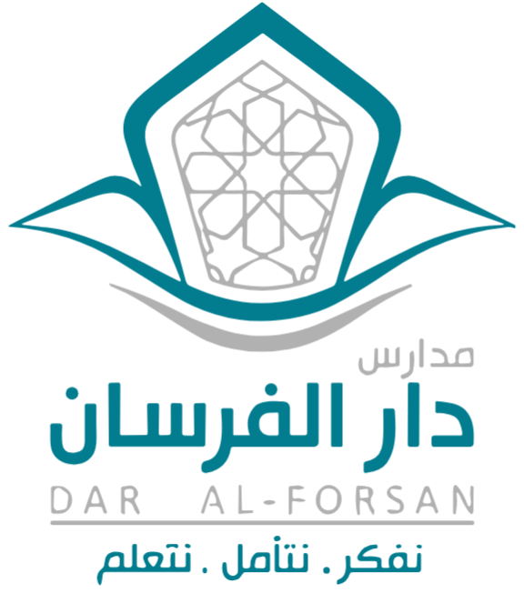
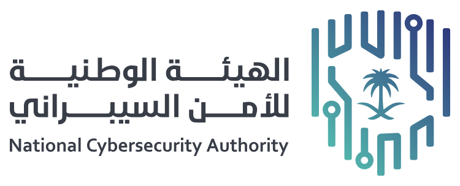

تحقق
فحص موثوقية الروابط ورموز الاستجابة السريعة (QR) والملفات، عبر قناة واتساب وبوابة حصين.
من ينفّذ: الطالب مع شخص بالغ
الانتقال إلى الخدمة

1448 - 1449 هـ | 2026 - 2027 م
وكيل شؤون الطلاب للمرحلة الابتدائية
أ. محمد بن ناصر آل عامر
﴿رَبِّ اجْعَلْ هَٰذَا الْبَلَدَ آمِنًا﴾
حماية الوطن واجبٌ يمارسه كل مواطن، والطالب يبدأ بما يقدر عليه اليوم: أن يعرف، ويتحقق، ويُسهم.
نموذج أولي للعرض والنقاشلا تستهِن بأي شيء تنشره، فقد يضرّ الوطن وأنت لا تدري.
المهمة ١ من ٥
النظام الأساسي للحكم يجعل الدفاع مسؤولية مشتركة. اقرأ المادة ثم أجب عن سؤال واحد.
الدفاع عن العقيدة الإسلامية، والمجتمع، والوطن واجب على كل مواطن.
على من يقع واجب الدفاع عن العقيدة والمجتمع والوطن؟
الحركة متوقفة لأن جهازك مضبوط على تقليل الحركة (إزالة الرسوم المتحركة أو توفير الطاقة). يمكنك تشغيل المعرض بزر «تشغيل»، أو التصفح بالأسهم.
المهمة ٢ من ٥
خمسة مواقف يمرّ بها الطلبة كل أسبوع. اختر التصرف الأنسب في كل موقف.
المهمة ٣ من ٥

الخدمات التالية تقدمها الهيئة الوطنية للأمن السيبراني. هذه المبادرة تتبع مدارس دار الفرسان ولا تمثّل الهيئة.
فحص موثوقية الروابط ورموز الاستجابة السريعة (QR) والملفات، عبر قناة واتساب وبوابة حصين.
من ينفّذ: الطالب مع شخص بالغ
الانتقال إلى الخدمةفحص الملفات للتحقق من خلوها من البرمجيات الضارة وتقدير احتمال وجود تهديد عند فتحها.
من ينفّذ: شخص بالغ فقط
الانتقال إلى الخدمةخدمة لتلقي البلاغات، وتذكر صفحتها أن معالجة البلاغ تستغرق ٣ أيام عمل.
من ينفّذ: وليّ الأمر أو المدرسة
الانتقال إلى الخدمةآخر تحقق من هذه الصفحات: ٢٦ أكتوبر ٢٠٢٦. الخدمات التجريبية قد تتغير، فارجع إلى الصفحة الرسمية. لا ترسل رابطاً يحمل بياناتك إلى أي خدمة.
محاكاة تعليمية داخل الصفحة. لا ترسل شيئاً ولا تستخدم الخدمة الفعلية، والأمثلة مصطنعة.
المهمة ٤ من ٥
الانتماء يظهر في السلوك. اختر فعلًا واحدًا تلتزم به.
المهمة ٥ من ٥
اكتب كلمة قصيرة تدافع بها عن وطنك. هذه معاينة افتراضية: لا تُرسل كلمتك لأحد ولا تُنشر.
أُضيفت كلمتك للمعاينة، وتجدها في شريط الملخص أدناه.
اكتملت المهام
معاينة افتراضية: الكلمات الأخرى في الشريط نماذج تجريبية، ولا تُرسل كلمتك لأحد.
اللهم احفظ بلادنا من كل شر، وأدم علينا نعمة الأمن والأمان.
#وطن_آمن#كلنا_درع_الوطن
لبدء مشاركة جديدة اضغط «مشاركة جديدة» في أعلى الصفحة.